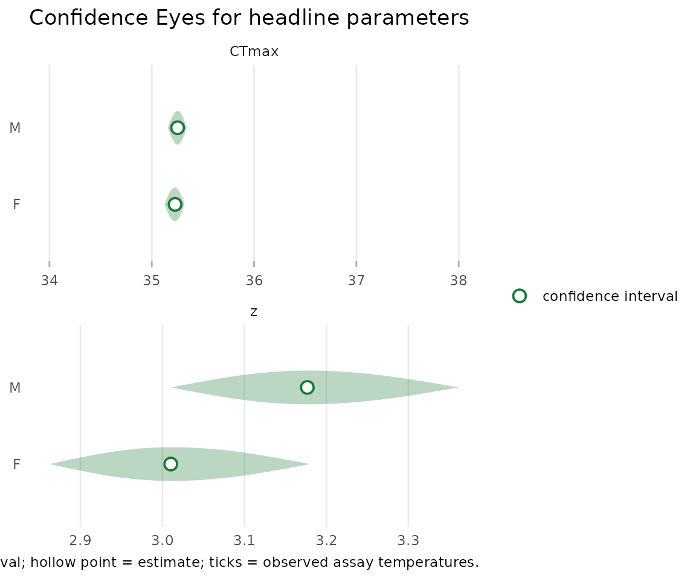
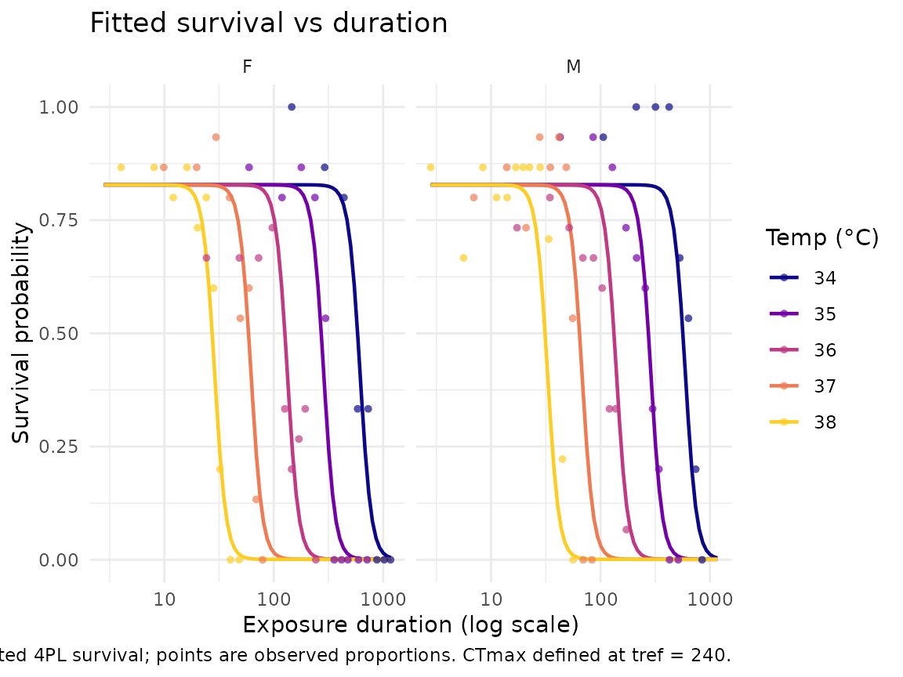

Case study: Drosophila suzukii lethal thermal death time across sexes
Source:vignettes/case-study-suzukii.Rmd
case-study-suzukii.RmdThis article fits a lethal thermal-death-time (TDT) model to the
vinegar fly Drosophila suzukii, asking the question Ørsted,
Hoffmann, Sgrò and colleagues posed in their 2024 study: do the
two sexes differ in their thermal limits? It mirrors the lethal
subset of Case Study 4 in the bayesTLS supplement, but it
is a freqTLS-only treatment: the fit runs live by maximum
likelihood (TMB, no Stan), uncertainty is summarised by
profile-likelihood confidence intervals, and the sex
difference is a frequentist contrast, not a
posterior.
This vignette builds without Stan. The
freqTLS side runs live by maximum likelihood (TMB); the
Bayesian (bayesTLS) and classical two-stage columns of the
three-way comparison are read from the maintainer-built benchmark cache
(inst/extdata/bayesTLS_benchmark_cache.rds), so the full
per-sex table renders without a Stan toolchain.
The dataset
dsuzukii is the per-individual mortality data from the
Ørsted D. suzukii assays, vendored from bayesTLS
under CC BY 4.0 (primary deposit 10.5281/zenodo.10602268;
cite @orsted_suzukii_2024 and
citation("freqTLS")). We aggregate it to survival counts
per (temp, time, sex) cell — n_dead of
n_total died — exactly as the bayesTLS case
study does.
str(mort)
#> 'data.frame': 94 obs. of 5 variables:
#> $ temp : num 34 34 34 34 34 34 34 34 34 34 ...
#> $ time : num 1022 106 1168 146 212 ...
#> $ sex : Factor w/ 2 levels "F","M": 1 2 1 1 2 1 2 2 1 2 ...
#> $ n_dead : int 15 1 15 0 0 2 0 0 3 5 ...
#> $ n_total: int 15 15 15 15 15 15 15 15 15 15 ...
table(mort$sex)
#>
#> F M
#> 45 49There are 94 cells (a temperature × duration × sex grid), 45 for females and 49 for males, totalling 1407 flies. Two columns deserve emphasis:
-
timeis in minutes. The reference exposure for this study is 4 hours = 240 minutes, so we settref = 240. - We interpret the threshold as absolute (a fixed 50%
survival), following Ørsted. The model itself is still parameterised by
the relative midpoint (
CTmaxis the 4PL midpoint, the(low + up)/2survival level). The relative and absolute thresholds coincide only when the asymptotes sit near 0 and 1 — which they do for these data (low≈ 0,up≈ 1, confirmed in the fit below), soderive_*atsurv = 0.5recovers the absolute LT50 with no extra argument. If your own data have asymptotes far from 0/1, the two thresholds diverge and you must pass thesurvyou want explicitly.
Fitting the model: one fit, grouped by sex
A single grouped call fits a beta-binomial 4PL with sex-specific
thermal location (CTmax, z) and a shared curve
shape (low, up, k) — the
constant-shape configuration that matches the bayesTLS “sex
on the midpoint only” model. The temperature effect runs through the
midpoint, so each sex gets its own CTmax and z
while the asymptotes and steepness are pooled.
std <- standardize_data(
mort, temp = "temp", duration = "time",
n_total = "n_total", n_dead = "n_dead", duration_unit = "minutes"
)
# fit_4pl(by = "sex") gives a per-sex CTmax and z (the "sex on the midpoint"
# model); $fit is the engine fit the extractors below read directly.
fit <- fit_4pl(std, by = "sex", t_ref = 240, family = "beta_binomial",
quiet = TRUE)$fit
fit$convergence$code # 0 = converged
#> [1] 0The optimiser converged (code 0, positive-definite
Hessian). The per-sex thermal limits, with profile-likelihood
confidence intervals:
confint(fit, c("CTmax:F", "CTmax:M", "z:F", "z:M"), method = "profile")[
, c("parameter", "estimate", "conf.low", "conf.high", "method")]
#> # A tibble: 4 × 5
#> parameter estimate conf.low conf.high method
#> <chr> <dbl> <dbl> <dbl> <chr>
#> 1 CTmax:F 35.2 35.1 35.3 profile
#> 2 CTmax:M 35.3 35.2 35.3 profile
#> 3 z:F 3.01 2.86 3.18 profile
#> 4 z:M 3.18 3.01 3.36 profileSo the maximum-likelihood estimates are:
| Quantity | Female | Male |
|---|---|---|
CTmax at 4 h (°C) |
35.23 [35.13, 35.32] | 35.25 [35.16, 35.34] |
z (°C / decade) |
3.01 [2.86, 3.18] | 3.18 [3.01, 3.36] |
Both sexes have an upper thermal limit near 35.2 °C at a four-hour
exposure, and a thermal sensitivity z of about 3 °C per
tenfold change in survival time. The intervals are confidence intervals
from the profile likelihood — the range of parameter values the data do
not reject at the 95% level — not credible intervals and not posterior
summaries.
The Confidence Eye
The freqTLS uncertainty display is the
Confidence Eye: a confidence lens with a hollow point
estimate, carrying no prior and making no probability statement about
the parameter. Here it shows CTmax and z for
both sexes side by side.
plot_confidence_eye(fit, parm = c("CTmax", "z"), method = "profile")
The female and male lenses overlap heavily for both quantities — the first visual hint that the sexes are not strongly separated. Each lens is a closed confidence interval (the profiles closed on both sides), so the eyes are drawn closed rather than hollow-and-open.
Survival curves
The fitted survival curves, with the observed cell proportions overlaid, show the 4PL decline of survival with exposure time at each temperature, per sex.
plot_survival_curves(fit)
A lower thermal threshold: T_crit
Because this is a lethal endpoint, the
rate-multiplier critical temperature T_crit is meaningful
here (it is a damage-accumulation concept and would be misleading for
sublethal endpoints such as heat-coma). derive_tcrit()
returns the temperature at which the thermal-damage rate falls to a
chosen low floor; at the bayesTLS default floor of 1% of
the lethal dose per hour:
c(
T_crit_F = round(derive_tcrit(fit, rate = 1, group = "F"), 2),
T_crit_M = round(derive_tcrit(fit, rate = 1, group = "M"), 2)
)
#> `T_crit` assumes a lethal endpoint; for sublethal data its steeper `z` makes it
#> implausibly low.
#> `T_crit` assumes a lethal endpoint; for sublethal data its steeper `z` makes it
#> implausibly low.
#> T_crit_F T_crit_M
#> 29.21 28.90T_crit sits near 29 °C for both sexes
(about 6 °C below CTmax), the lower thermal threshold a
heat-injury model would treat as the onset of negligible damage. It is a
deterministic transform of the fitted CTmax and
z, not a new fit.
Do the sexes differ? A frequentist contrast
The biological question is whether the small female-minus-male gaps
in CTmax and z are distinguishable from zero.
freqTLS answers this with a profile or bootstrap confidence
interval on the difference itself — a frequentist
contrast, not a posterior probability statement. The contrast
is requested by name: dCTmax:F-M (the CTmax
difference, female minus male) and dz:F-M (the sensitivity
difference, taken on the log-z scale so the z
ratio is its exponential).
sex_contrasts <- confint(
fit, c("dCTmax:F-M", "dz:F-M"), method = "profile",
fallback = TRUE, nboot = 1000L, boot_seed = 20260713L
)
#> Warning: The profile likelihood for "dCTmax:F-M" did not close on the lower and upper
#> sides: "dCTmax:F-M" is weakly identified.
#> ℹ Returning "NA" on the open side rather than a fabricated bound.
#> ℹ Consider bayesTLS or a bootstrap for this parameter.
#> Warning: The profile likelihood for "dz:F-M" did not close on the lower and upper sides:
#> "dz:F-M" is weakly identified.
#> ℹ Returning "NA" on the open side rather than a fabricated bound.
#> ℹ Consider bayesTLS or a bootstrap for this parameter.
#> ! Using a parametric bootstrap for 2 parameters where the profile did not
#> close.
#> ℹ Set `fallback = FALSE` to keep the profile-only behaviour ("NA" on a
#> non-closing side).
sex_contrasts[, c("parameter", "estimate", "conf.low", "conf.high", "method")]
#> # A tibble: 2 × 5
#> parameter estimate conf.low conf.high method
#> <chr> <dbl> <dbl> <dbl> <chr>
#> 1 dCTmax:F-M -0.0244 -0.152 0.0920 bootstrap
#> 2 dz:F-M -0.0538 -0.133 0.0236 bootstrapBoth intervals span zero:
-
dCTmax:F-M= -0.024 °C, 95% CI [-0.154, 0.092] — the sexes’ four-hourCTmaxvalues are indistinguishable. -
dz:F-M= -0.054 [-0.133, 0.026] on the log-zscale (azratio ofexp(-0.054)≈ 0.95, a point estimate of about a 5% difference inzbetween the sexes), with a confidence interval that includes 0 (ratio 1).
This agrees with the published finding: Ørsted reported a sex
difference in z whose interval spans zero, i.e. no
clear sex difference in thermal sensitivity or limit. The
likelihood path reaches the same conclusion as the Bayesian path did, by
a contrast that makes no posterior claim. The method column
above records when the requested profile used the asymmetry-respecting
parametric- bootstrap fallback without a prior.
Validation: does ML recover the published values?
A useful cross-check is whether the maximum-likelihood fit lands on
the same parameter values Ørsted (2024) reported in their Table 1, which
were obtained by a different route. The published values are
z ≈ 3.03 (F) / 3.28 (M) and a four-hour CTmax
≈ 35.2 °C for both sexes.
ml <- confint(fit, c("CTmax:F", "CTmax:M", "z:F", "z:M"), method = "profile")
data.frame(
parameter = ml$parameter,
ML_estimate = round(ml$estimate, 2),
published = c(35.2, 35.2, 3.03, 3.28)
)
#> parameter ML_estimate published
#> 1 CTmax:F 35.23 35.20
#> 2 CTmax:M 35.25 35.20
#> 3 z:F 3.01 3.03
#> 4 z:M 3.18 3.28The match is close: CTmax ≈ 35.23 / 35.25 °C against a
published ≈ 35.2 °C, and z ≈ 3.01 / 3.18 against a
published 3.03 / 3.28. The likelihood path reproduces the published
thermal-limit estimates on the same data — a validation success that the
freqTLS engine targets the same model and the same fitted
curve as the analyses that established these numbers.
The three-way comparison, per sex
The cache holds the maintainer-built bayesTLS
(posterior) and classical two-stage summaries; the freqTLS
column is computed live as this page renders. All three use the matched
configuration (beta-binomial, constant shape, tref = 240
minutes). The CTmax compared is the relative-midpoint
parameter; for these near-0/near-1 lethal asymptotes it coincides with
the absolute LT50 the study reports above, so the benchmark and the
headline per-sex table agree.
| Sex | Quantity | Two-stage (delta CI) | bayesTLS (95% CrI) | freqTLS (profile CI) |
|---|---|---|---|---|
| Female | CTmax (°C) | 34.80 [34.56, 35.04] | 35.20 [35.08, 35.30] | 35.23 [35.12, 35.32] |
| Female | z (°C / decade) | 2.99 [2.60, 3.38] | 3.02 [2.88, 3.18] | 3.01 [2.86, 3.18] |
| Male | CTmax (°C) | 34.98 [34.34, 35.62] | 35.22 [35.10, 35.32] | 35.25 [35.16, 35.34] |
| Male | z (°C / decade) | 3.40 [2.15, 4.65] | 3.18 [2.98, 3.39] | 3.18 [3.01, 3.36] |
Under the matched configuration the freqTLS
profile-likelihood confidence intervals and the bayesTLS
credible intervals summarise the same fitted curve per sex —
one prior-free and by optimisation, the other with a prior and MCMC —
and the two model-based fits agree tightly, both reproducing the
published thermal limits (CTmax ≈ 35.2 °C; z ≈
3.0 for females and 3.2 for males). The classical two-stage estimate
sits a few tenths of a degree lower on CTmax (≈ 34.8–35.0
°C) with wider, less precise intervals — the expected behaviour of the
cruder per-temperature method, and a reminder that the headline
equivalence here is between the two model-based fits (see
vignette("comparing-to-bayesTLS") and
vignette("model-math")).
Boundary: lethal only
freqTLS is purpose-built for the 4PL survival/proportion
model class. The Ørsted study measured two further D. suzukii
endpoints that are non-goals here:
-
Heat-coma (knockdown) is a right-censored
time-to-event endpoint (
brms::bf(... | cens(cens) ~ ...)), a model class outside the 4PL count engine. Its rate-multiplierT_critis also endpoint-conditional (knockdownz< lethalz), so it must not be reported as a lethal threshold. For the heat-coma analysis, seebayesTLS. -
Productivity (fertility) is modelled with a
hurdle-Gamma (a zero-inflation process plus a positive clutch-size
process), two response processes, neither a 4PL survival curve, and the
magnitude component has no LT50 or
zat all. For productivity, seebayesTLS.
This article covers the lethal-by-sex subset only,
which is the part of the D. suzukii analysis that fits the
freqTLS model class.
Where to next: vignette("heat-injury")
walks through the T_crit / heat-injury workflow that this
absolute-threshold fit feeds.
Session info
sessionInfo()
#> R version 4.6.1 (2026-06-24)
#> Platform: x86_64-pc-linux-gnu
#> Running under: Ubuntu 24.04.4 LTS
#>
#> Matrix products: default
#> BLAS: /usr/lib/x86_64-linux-gnu/openblas-pthread/libblas.so.3
#> LAPACK: /usr/lib/x86_64-linux-gnu/openblas-pthread/libopenblasp-r0.3.26.so; LAPACK version 3.12.0
#>
#> locale:
#> [1] LC_CTYPE=C.UTF-8 LC_NUMERIC=C LC_TIME=C.UTF-8
#> [4] LC_COLLATE=C.UTF-8 LC_MONETARY=C.UTF-8 LC_MESSAGES=C.UTF-8
#> [7] LC_PAPER=C.UTF-8 LC_NAME=C LC_ADDRESS=C
#> [10] LC_TELEPHONE=C LC_MEASUREMENT=C.UTF-8 LC_IDENTIFICATION=C
#>
#> time zone: UTC
#> tzcode source: system (glibc)
#>
#> attached base packages:
#> [1] stats graphics grDevices utils datasets methods base
#>
#> other attached packages:
#> [1] freqTLS_0.1.0
#>
#> loaded via a namespace (and not attached):
#> [1] Matrix_1.7-5 gtable_0.3.6 jsonlite_2.0.0 dplyr_1.2.1
#> [5] compiler_4.6.1 tidyselect_1.2.1 jquerylib_0.1.4 systemfonts_1.3.2
#> [9] scales_1.4.0 textshaping_1.0.5 yaml_2.3.12 fastmap_1.2.0
#> [13] lattice_0.22-9 ggplot2_4.0.3 R6_2.6.1 labeling_0.4.3
#> [17] generics_0.1.4 knitr_1.51 tibble_3.3.1 desc_1.4.3
#> [21] bslib_0.11.0 pillar_1.11.1 RColorBrewer_1.1-3 TMB_1.9.21
#> [25] rlang_1.3.0 utf8_1.2.6 cachem_1.1.0 xfun_0.60
#> [29] fs_2.1.0 sass_0.4.10 S7_0.2.2 otel_0.2.0
#> [33] viridisLite_0.4.3 cli_3.6.6 withr_3.0.3 pkgdown_2.2.1
#> [37] magrittr_2.0.5 digest_0.6.39 grid_4.6.1 lifecycle_1.0.5
#> [41] vctrs_0.7.3 evaluate_1.0.5 glue_1.8.1 farver_2.1.2
#> [45] ragg_1.5.2 rmarkdown_2.31 tools_4.6.1 pkgconfig_2.0.3
#> [49] htmltools_0.5.9